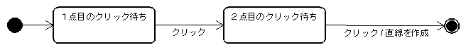

〜 OpenGLプラットフォーム「ヒスイ」 チュートリアル 〜
標準プラグインである Hisui.Spatial.dll に含まれる IPolyline エンティティを利用して、直線作図を行うコマンドを作成します。開発チュートリアル「Hello World を作ってみよう」を理解していることを前提とします。
「Hello World を作ってみよう」と同様の手順で、下記のように PutLine コマンドを作成します。
[Hisui.Ctrl.Command("直線作図")]
static void PutLine()
{
}
起動してみて、直線作図メニューが作成されているのを確認してください。
[Hisui.Ctrl.Command("直線作図")]
static void PutLine( Hisui.Ctrl.IContext con )
{
}
コンテキスト情報からは View オブジェクトや Document オブジェクトを取得することが出来ます。これから Document オブジェクトに直線を登録することになります。
Hisui.Spatial.dll には、IPolyline というインターフェイスが定義されています。このチュートリアルでは、直線を IPolyline を用いて表現することにします。IPolyline はその名の通り、本来は折線を表現するクラスですので直線だけでなくn点から構成される折線データも保持することが出来ますが、このチュートリアルでは直線としてしか扱いません。
IPolyline はインターフェイスですので、new することは出来ません。次のようにファクトリー関数を利用してインスタンスを生成します。
using Hisui;
[Hisui.Ctrl.Command("直線作図")]
static void PutLine( Hisui.Ctrl.IContext con )
{
var polyline = SI.NewInstance<Hisui.Spatial.IPolyline>();
}
ここでは (0, 0, 0) から (1, 1, 1) を結ぶ直線を作成しましょう。
[Hisui.Ctrl.Command("直線作図")]
static void PutLine( Hisui.Ctrl.IContext con )
{
var polyline = SI.NewInstance<Hisui.Spatial.IPolyline>();
polyline.Add( new Hisui.Geom.Point3d( 0, 0, 0 ) );
polyline.Add( new Hisui.Geom.Point3d( 1, 1, 1 ) );
}
作成した IPolyline インスタンスを、次のようにしてドキュメントに登録します。
[Hisui.Ctrl.Command("直線作図")]
static void PutLine( Hisui.Ctrl.IContext con )
{
var polyline = SI.NewInstance<Hisui.Spatial.IPolyline>();
polyline.Add( new Hisui.Geom.Point3d( 0, 0, 0 ) );
polyline.Add( new Hisui.Geom.Point3d( 1, 1, 1 ) );
con.ActiveEntries.Put( polyline );
}
早速実行してみて、直線が表示されるか確認してみましょう。
なお、次のいずれの書き方でも、同様に polyline を登録できます。
con.Document.ActiveEntries.Put( polyline );
Hisui.Core.Document.Current.ActiveEntries( polyline );
Hisui.Ctrl.Current.Document.ActiveEntries( polyline );
Hisui.SI.PutEntry( polyline );
直線は作成できるようになりましたが、両端点の座標は固定されています。マウスで自由に作図できるようにコマンドを修正しましょう。具体的には、マウスで２点をクリックするとその２点間に直線が作成される作図コマンドを作ります。

ヒスイでは、この状態遷移を IEnumerator を用いて次のようにあらわします。
IEnumerator<状態>IEnumerator<> は System.Collections.Generic に用意されているイテレータです。IEnumerator<状態>.Current は現在の状態を返し、IEnumerator<状態>.MoveNext() で次の状態への遷移を表すのです。これを用いて、直線作図コマンド PutLine() は次のように表せます。
static IEnumerator<状態> PutLine(Hisui.Ctrl.IContext con)
{
yield return クリック待ち状態 ; // １点目
yield return クリック待ち状態 ; // ２点目
直線の作成 ;
}
なお、yield return は C#2.0 で新たに加わった新機能です。これを使うと IEnumerator オブジェクトが簡単に作成できます。ご存じない方はインターネットで "C# yield" などを検索してみてください。多くの解説ページが見つかると思います。
PutLine() コマンドを次のように書き換えます。
[Hisui.Ctrl.Command("直線作図")]
static IEnumerator<Hisui.Ctrl.IOperation> PutLine(Hisui.Ctrl.IContext con)
{
var click1 = new Hisui.Ctrl.LButtonClick( con );
var click2 = new Hisui.Ctrl.LButtonClick( con );
yield return click1;
yield return click2;
var polyline = SI.NewInstance<Hisui.Spatial.IPolyline>();
polyline.Add( new Hisui.Geom.Point3d( 0, 0, 0 ) );
polyline.Add( new Hisui.Geom.Point3d( 1, 1, 1 ) );
con.ActiveEntries.Put( polyline );
}
Hisui.Ctrl.IOperation がオペレーションの状態を表すインターフェイスです。この IEnumerator を返すことで作図コマンドの状態遷移を表します。
Hisui.Ctrl.LButtonClick はマウス左ボタンのクリック待ち状態を表すクラスです。click1 が1点目、click2 が2点目のクリックです。
では早速起動してみましょう。コマンドを起動しても、すぐには直線が描画されません。ここでビュー上で適当に２回クリックすると、直線が作図されると思います。
現状では、マウスのクリック位置とは無関係な直線が作図されてしまいます。ちゃんとクリック位置を使って直線を作図するように修正しましょう。
まずマウスのクリック位置を取得します。
System.Drawing.Point pt1 = click1.EventArgs.Location;
System.Drawing.Point pt2 = click2.EventArgs.Location;
pt1, pt2 はスクリーン座標の点ですから、これをワールド座標に変換する必要があります。これには con.View.Camera オブジェクトを使います。Camera にはワールド座標をどのような向きからどのような大きさで「撮影」しているかを表す情報が格納されています。次のコードでスクリーン座標をワールド座標に変換することができます。
con.View.Camera.ScreenToWorld( スクリーン座標 );
こうして得られるワールド座標を polyline に Add すればOKです。以下に PutLine() コマンド全体を載せておきます。
[Hisui.Ctrl.Command("直線作図")]
static IEnumerator<Hisui.Ctrl.IOperation> PutLine(Hisui.Ctrl.IContext con)
{
var click1 = new Hisui.Ctrl.LButtonClick( con );
var click2 = new Hisui.Ctrl.LButtonClick( con );
yield return click1;
yield return click2;
var pt1 = click1.EventArgs.Location;
var pt2 = click2.EventArgs.Location;
var polyline = SI.NewInstance<Hisui.Spatial.IPolyline>();
polyline.Add( con.View.Camera.ScreenToWorld( pt1 ) );
polyline.Add( con.View.Camera.ScreenToWorld( pt2 ) );
con.ActiveEntries.Put( polyline );
}
Copyright © 2007, 株式会社カタッチ
http://www.quatouch.com